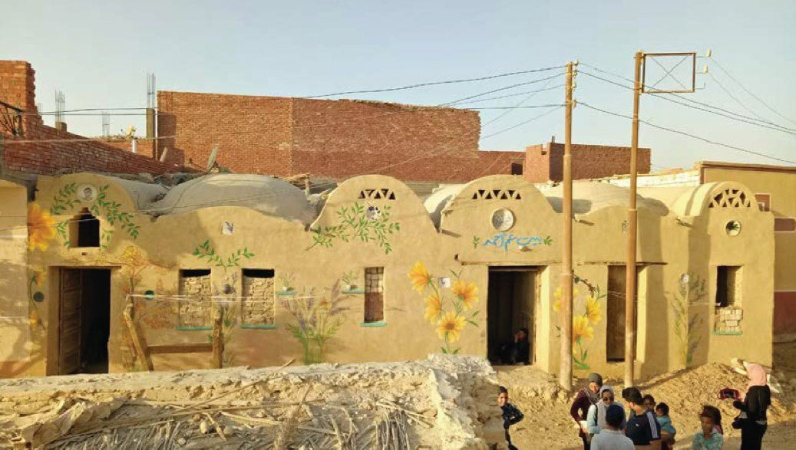
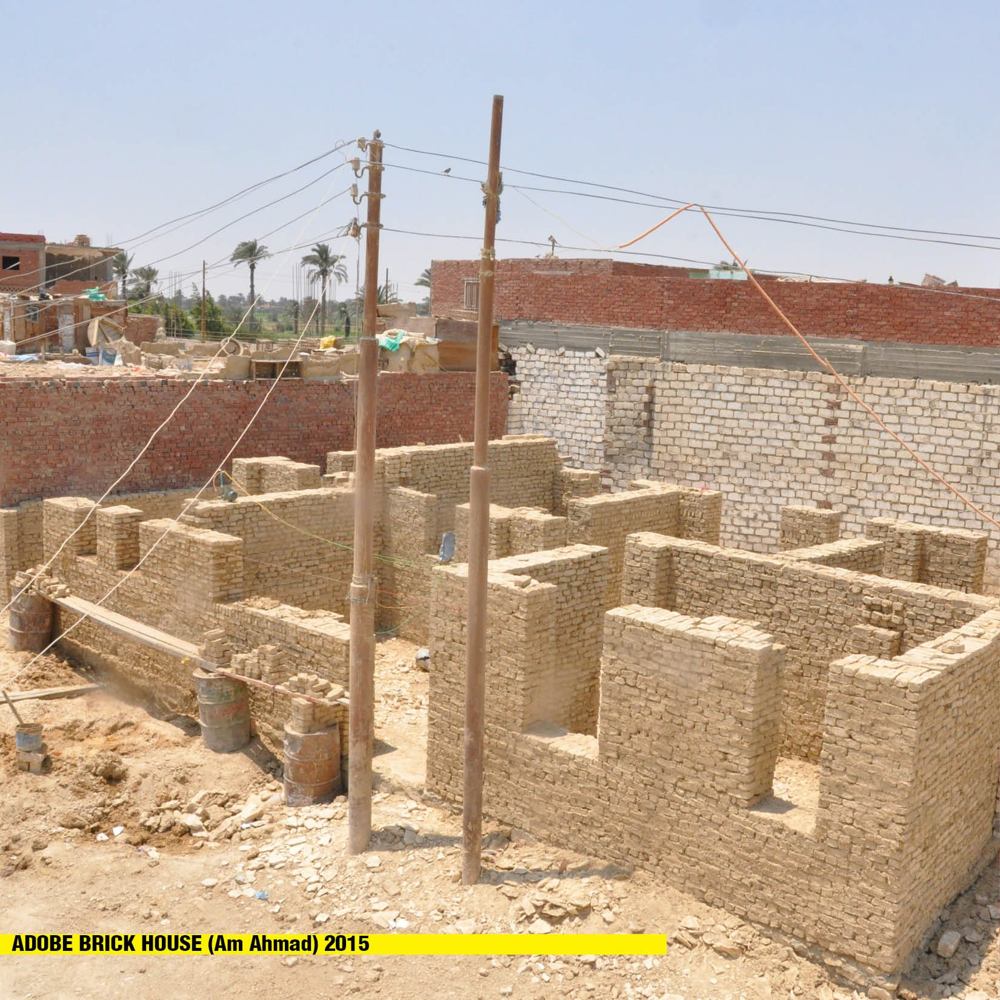
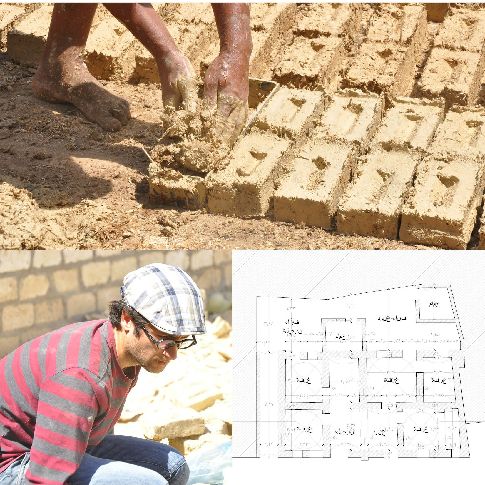

/ FREELANCE — EARTH BUILDING
Adobe Brick House
A home in Fayoum, built by Adel Fahmy for Am Ahmed after a storm destroyed his previous house — raised from affordable, locally sourced mud brick, roofed with the traditional domes and vaults of Egyptian earth construction.
20XXYear
FayoumEgypt
Adel FahmyBuilt for Am Ahmed
Domes & vaultsMud brick

/ OVERVIEW
A home rebuilt from the ground it stands on.
After a storm destroyed Am Ahmed’s home in Fayoum, this house was built for him by earth-builder Adel Fahmy from affordable, locally sourced mud brick.
Its rooms are roofed with domes and vaults — the traditional earth-construction technologies of the region — carried entirely in the material of the site itself, keeping the build both economical and low-impact.
ADomes & vaults

